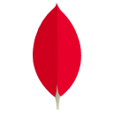
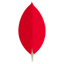

Red & Red
Sobre mim
Meu nome é Miguel tenho {{new Date().getFullYear() - 2002}} anos, atualmente sou bacharelando em Ciência da computação (BCC) no UNIVEM, além disso, desenvolvedor de site e aplicativos mobile. Estudo programação desde o final 2016, comecei com Python e logo após passei a estudar C e PHP, todavia me foquei mais no Python e no momento é a linguagem que mais gosto tal como a que mais sei sobre. Mas não fico preso apenas a uma linguagem conheço outras e sei trabalhar com elas também como NodeJS, Go, Flutter, Vue e React.
Também sou o criador da Social Vupy Networking, uma rede social focada dar maior liberdade e autonomia aos usuários, em termos de conteúdo como personalização, com base em privacidade, segurança e liberdade (responsável)
Conhecimento
Linguagens >>
Banco de dados >>
Frameworks >>
Outros >>
Python
Esta é a linguagem que mais tenho afinidade e conhecimento sobre, a estudo deste 2016 mais especificamente na parte web com Django e WebSockets para o desenvolvimento de APIs e Sites, além disso eu utilizo o Python na criação de scripts para automação de rotinas básico como Tasks, buscador de dados em API e entre outros usos
Click me


PostgreSQL
De fato o banco estrutural que mais gosto de usar, a consistência do armazenamento de dados em minha opinião supera a do MySQL, além de que é mais rápido, pratico e otimizado o seu uso. Sempre o usei com Django faz uma excelente junção quase todos os projetos que tenho que usam banco de dados estrutural o PostgreSQL está presente pelo menos de 2018 para frente
Click me

 


Django
Este é de fato o framework que mais gosto, a versatilidade e simplicidade do código escrito nele torna-o simples e fácil de se entender, além de que é possível fazer muito com pouca linhas de código graças ao reaproveitamento que esse proporciona. Fora que a rapidez e praticidade de configuração e instalação do Django é surreal, além de que ainda é possível automatizar este processo e demais processos
Click me


Docker
Como o Docker facilita tudo, ter a possibilidade de isolar as dependências brutas (linguagens, bancos, infra simples) dos projetos em mini VM's para que possa rodar em qualquer máquina independentemente do OS nele é sensacional, estou mexendo com o docker desde metade 2019 e hoje uns 80% (praticamente todos privados) dos meus projetos contêm o docker
Click me


Make this
and turn red ...
Projetos
Vupy Social Networking
Este projeto é criação de uma rede social que pauta a trazer maior autonomia e liberdade aos usuários, para isso é elaborado ferramentas que lhe ajudam a ter o controle da sua rede de amigos e seguidores, além disso damos a oportunidade de personalizá-la para deixá-la ao mais próximo do seu gosto pessoal.
Gostou? dê uma olhada na Vupy
Axis
Um dos meus últimos projetos foi a Axis um site para uma futura empresa que prestará serviços de marketing digital, SEO, Social mídia e entre outras coisas
Packs
Packs é um instalador de pacotes do Python, similar ao PIP todavia com algumas funcionalidades extras, cores e flags. Além disso com o Packs é possível separar as dependências de uso e dependências de desenvolvimento em arquivos distintos, todo o funcionamento gira em torno dos ambientes virtuais (env's), ademais o projeto tem como foco principal instalar as dependências do projeto ao ser executado algum python que dependa de alguma biblioteca que por sua vez não está instalada

SoftUI
Este projeto é dedicado a criar componentes estilizados para a Vupy, seria na verdade um subproduto, estes componentes são os padrões do uso, como regras de layout, cores, formatos, tipografia, cards, campos de texto e entre outros, foi reservado neste projeto para que se pudesse usar em outros também futuramente, a SoftUI segue alguns princípios que são a base de seu funcionamento/esquemática.
O Projeto é baseado na seguinte frase:
"O vazio deve ser sempre preenchido com o vazio, pois está é sua essência pura, ser vazio."